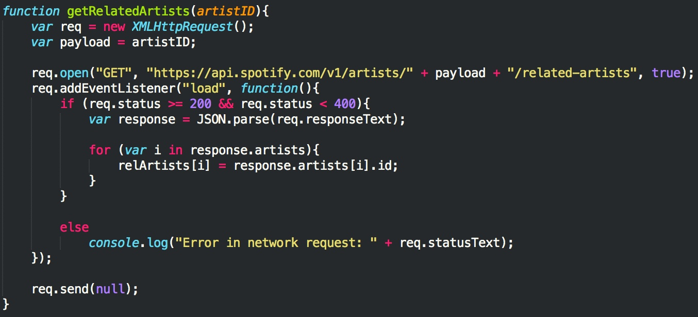

Making the playlist generator
So far, we've gone over what the Spotfy API is and does, making calls to the API's endpoints, parsing the JSON response, and displaying that information in a simple profile layout. This final section will pull everything together, including some new endpoints, to make a playlist of top tracks from related artists based on the searched artist.
Getting the artist's Spotify ID and their related artists
We're going to recycle most of the code we used in the simple artist search from the previous page, but this time instead of extracting profile data from the response, we're interested in retrieving the artist's Spotify ID, which is a base-62 identifer unique to every item in Spotify's catalogue (artists, tracks, albums, playlists, etc). Everything looks pretty much the same, except we'll be saving the Spotify ID from the response to the artistIDvariable:
Then the function getRelatedArtists is called; this function receives the artistID and makes a call to the endpoint that retrieves an artist's related artists. That endpoint looks like this: GET https://api.spotify.com/v1/artists/{id}/related-artists
If the request is successful, it'll return an array of up to 20 artist objects in JSON format:
We'll then parse and store all related artists' Spotify IDs in an array called relArtists:

Getting top tracks from the related artists
Almost done! Now we have an array that holds Spotify IDs for all of the searched artist's related artists. The final endpoint we'll be making a call to retrieves an artist's top tracks. That endpoint looks like this: GET https://api.spotify.com/v1/artists/{id}/top-tracks
This endpoint is another GET request and it requires two parameters:
- id: the Spotify ID of the artist
- country: the country code
getTopTracks will receive an artistID and open a request to the top tracks endpoint, inserting the artist ID and country code into the request (for the purposes of our playlist generator, we'll set the country code to US):
If the request is successful, the response returns another array, this time holding up to 10 track objects in JSON format:
Now we just store all the top tracks in another array
topTracks and display the tracks in HTML. We repeat this process for all of the related artists' Spotify IDs; in the function generatePlaylist, we call getTopTracks on every element in the relArtists array:
And that's it! To summarize the steps:
- Search an artist
- Retrieve the searched artist's Spotify ID from the response
- Using the artist's Spotify ID, get the artist's related artists using the related artists endpoint
- Store all related artists' IDs into an array, and get the top tracks from each related artist using the top tracks endpoint
- Display the top tracks from each related artist